Iluminar el mundo: el sentido de la visión
Basta con ver para creer: no necesito preguntarme por qué.
La canta Elvis Presley. Letra de Red West y Glen Spreen. Traducción propia.
Esa letra, de la canción Seeing is Believing, que popularizó Elvis Presley, resume el poder que le damos al sentido de la visión. Es uno de los muchos ejemplos del lenguaje que muestran lo importante que nos resulta ver. Frases como «ya veo», para decir que entendemos, o «una imagen vale más que mil palabras», se apoyan en la metáfora de la visión. Del mismo modo, en las empresas y en la industria las organizaciones suelen tener declaraciones de visión, que describen lo que quieren lograr. Todas esas expresiones señalan la importancia de la visión en la vida cotidiana. Igual que con los otros sentidos, vamos a empezar el recorrido por la visión a partir de la señal que llega a los sentidos: el estímulo visual.
La luz: la onda y la partícula
La señal que detecta el sistema visual es luz reflejada en una superficie o emitida por una fuente, como una lámpara, o por fuentes naturales como el sol. Podemos detectar luz de una intensidad, o luminancia, que va de 10−6 a 108 candelas por metro cuadrado (cd m−2). Para dar una idea, ese intervalo abarca desde un cielo nocturno tenuemente iluminado hasta el sol. Una pantalla de computadora típica, como la que quizá estés usando ahora, tiene una luminancia de 50-300 cd m−2. La luz que podemos detectar es solo una pequeña parte del espectro electromagnético (Figura 4.31).
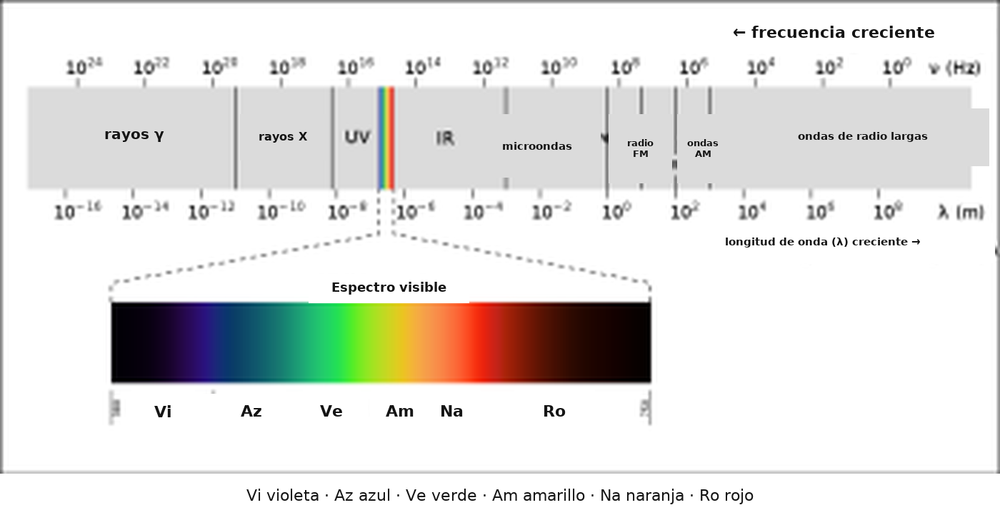
Ese espectro electromagnético incluye otras señales que quizá conozcas, como las ondas de radio, los rayos X y las microondas. El espectro de la luz visible abarca las longitudes de onda de 380-780 nm, que corresponden a un intervalo de frecuencias de 7,9 × 1014 a 3,8 × 1014 Hz (790.000.000.000.000-380.000.000.000.000 Hz): lo que vemos como los colores del violeta al rojo.
Mirá la Figura 4.31: ¿qué longitud de onda y qué frecuencia se asocian con el violeta?
El violeta está en un extremo del espectro de la luz visible, con una longitud de onda de 380 nm y una frecuencia de 7,9 × 1014 Hz.
Las ondas de este espectro son ondas transversales y consisten en variaciones simultáneas de campos eléctricos y magnéticos, perpendiculares entre sí (Figura 4.32). A diferencia de las ondas sonoras de las que leíste al hablar de la audición, las ondas electromagnéticas no necesitan un medio para transmitirse: la luz puede viajar por el vacío.
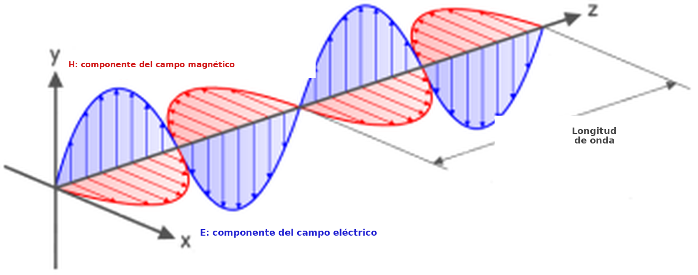
Quien esté atento habrá notado que el título de esta sección indica que la luz no es solo una onda, sino también una partícula. Ese subtítulo apunta a un debate científico intenso entre algunas de las personas más famosas de la historia de la ciencia: un Quién es quién de la Royal Society. Isaac Newton creía que la luz estaba hecha de partículas, llamadas fotones, mientras que su rival Robert Hooke creía que la luz era una onda. Con el tiempo, los experimentos y los cálculos de James Clerk Maxwell parecieron darle la razón a Hooke, y aquel debate, que había sido feroz, se apaciguó.
Sin embargo, el descubrimiento del efecto fotoeléctrico (véase el recuadro de más abajo) reabrió el debate y llamó la atención de Albert Einstein. Einstein propuso una teoría nueva: la luz no estaba hecha de ondas o de partículas, sino de ambas cosas. La luz estaba hecha de paquetes de ondas, o fotones. Esa idea se elaboró para mostrar que algunos resultados experimentales se explican mejor si concebimos la luz como una onda, otros funcionan mejor si se la describe como una partícula, y otros admiten cualquiera de las dos explicaciones. Ese trabajo le valió a Einstein el Premio Nobel de Física.
Recuadro. El efecto fotoeléctrico
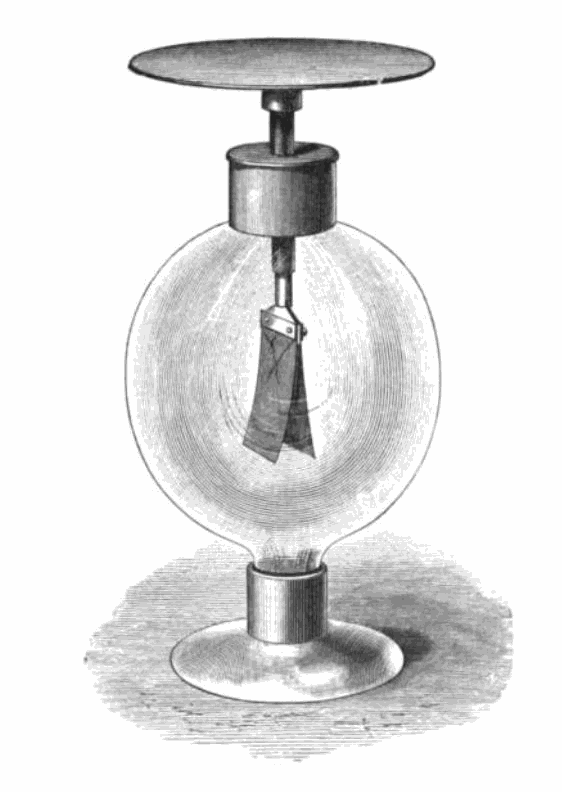
El efecto fotoeléctrico es la emisión de electrones de un material cuando una radiación electromagnética lo alcanza. Se demuestra mejor cuando el material es un metal. Cuando la radiación electromagnética incide sobre un metal, la energía que transporta puede transferirse a los electrones del metal y, si esa energía supera la energía de enlace (la que mantiene al electrón en el metal), los electrones pueden ser expulsados de la sustancia. Lo decisivo es que esto no ocurre con cualquier radiación: solo ocurre con fuentes de energía muy alta. La energía del espectro electromagnético se relaciona con su frecuencia y su longitud de onda, de modo que las ondas de mayor frecuencia, y por lo tanto de menor longitud de onda, tienen más energía. Eso significa que la luz del extremo violeta del espectro visible tiene más energía que la del extremo rojo. El efecto puede demostrarse con un electroscopio (Figura 4.33). En este electroscopio de laminillas de oro, las dos laminillas que cuelgan se separan cuando tienen carga negativa; pero, si se envían fotones de alta energía a la placa de arriba y se pierden electrones, las laminillas vuelven a juntarse. El hecho de que este efecto solo funcionara para algunas longitudes de onda de la luz fue decisivo para entender la luz a la vez como onda y como partícula.
Ahora que examinamos la naturaleza de la señal visual, conviene ver cómo puede detectarse. A partir de eso podría esperarse que la sección siguiente se centre en la transducción, pero en el sistema visual hay bastante que recorrer antes de llegar a las células receptoras sensitivas donde ocurre la transducción. Por eso empezamos por la estructura del ojo.
De la fuente de luz a la retina: poner el mundo en foco
El órgano del sistema visual es el ojo y, igual que el oído, está formado por varias partes, y todas cumplen un papel decisivo para que la visión sea precisa (Figura 4.34).
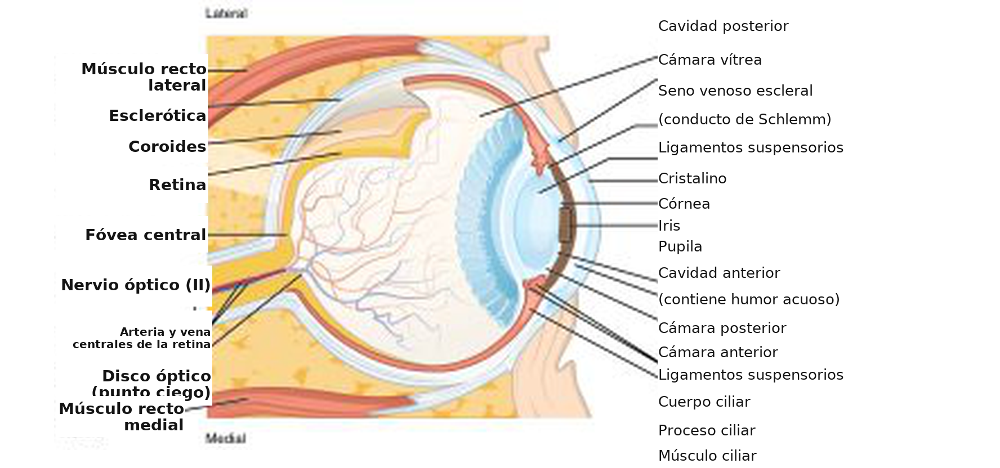
La Figura 4.34 muestra que la luz tiene que atravesar varias estructuras antes de llegar a la retina, donde están las células receptoras sensitivas, llamadas fotorreceptores. Esas estructuras tienen un efecto dióptrico y se denominan aparato dióptrico, lo que simplemente significa que participan en la refracción, es decir, en desviar la luz hacia un punto focal. Aunque intervienen varias estructuras, el poder de refracción del ojo proviene casi por completo de la córnea y del cristalino. La córnea tiene un poder de refracción fijo, pero el cristalino puede modificar el suyo al volverse más grueso o más plano. Cuando los músculos ciliares se contraen, el cristalino se redondea, aumenta su poder de refracción y su capacidad de desviar las ondas de luz. Eso permite enfocar fuentes que están a distintas distancias del ojo: las ondas de luz se reúnen en un punto focal sobre la superficie de la retina (Figura 4.35).
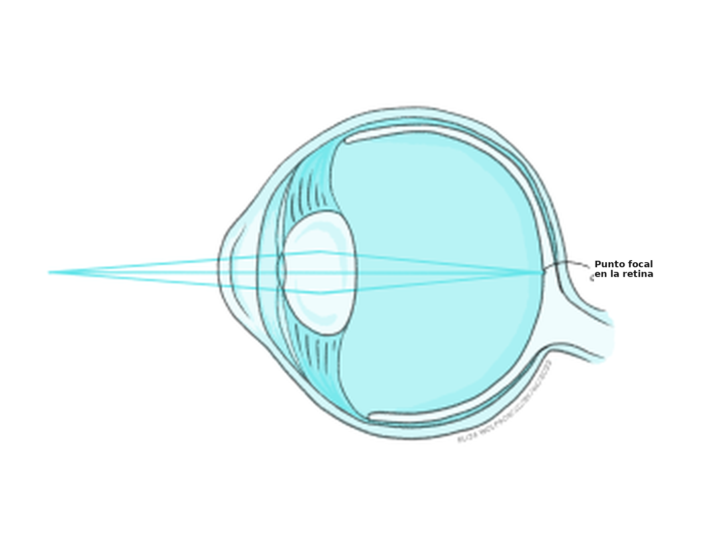
Aunque este proceso parece bastante simple si se lo compara con gran parte de lo que aprendiste en este capítulo sobre los sentidos, los errores de refracción son muy frecuentes. Hay distintos tipos, pero es más probable que hayas oído hablar de estos:
- Miopía, o vista corta, que hace que los objetos lejanos se vean borrosos.
- Hipermetropía, o vista larga, que hace que los objetos cercanos se vean borrosos.
- Presbicia, que dificulta ver de cerca a las personas adultas de mediana edad y mayores.
En conjunto, se piensa que estas afecciones afectan a 2.200 millones de personas en el mundo (World Health Organisation, 2018), y que 800 millones tienen una alteración que podría resolverse con anteojos o lentes de contacto (World Health Organisation, 2021). Para corregir estos errores de refracción hay que fabricar lentes que aumenten (hipermetropía) o disminuyan (miopía) la refracción total de la luz (véase el Recuadro 8, más abajo).
Recuadro 8. Errores de refracción y lentes correctivas
La miopía y la hipermetropía son dos de los errores de refracción más frecuentes. La miopía aparece cuando el poder de refracción del ojo es demasiado grande y el punto focal queda antes de la retina (Figura 4.36a). La hipermetropía aparece cuando el poder de refracción del ojo es demasiado bajo y la imagen todavía no se enfocó cuando llega a la retina: en la práctica, el punto focal quedaría detrás de la retina (Figura 4.36c). Para resolverlo, hay que colocar lentes delante del ojo, en forma de anteojos o de lentes de contacto. En la miopía, la lente contrarresta el poder de refracción normal del ojo (Figura 4.36b). En la hipermetropía, desvía la luz en la misma dirección que el ojo (Figura 4.36d).
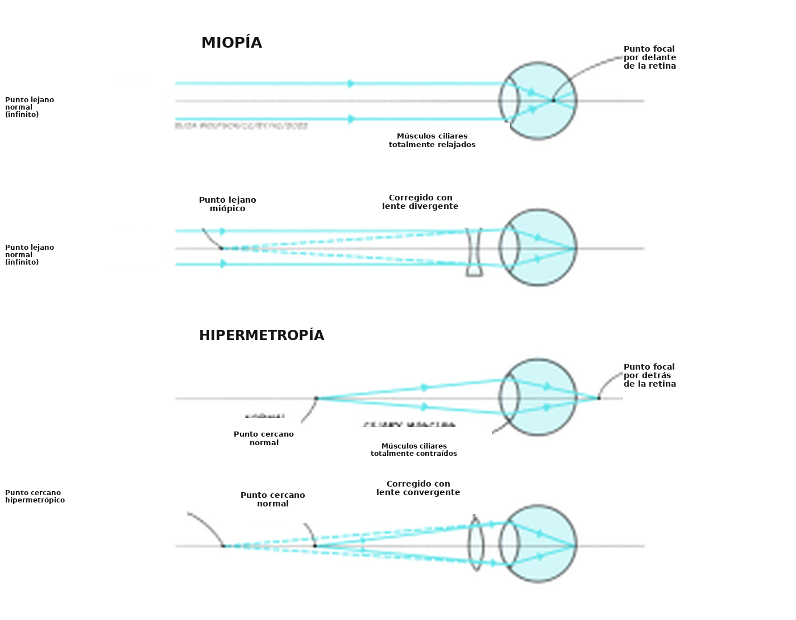
La presbicia suele aparecer con la edad y se debe al endurecimiento gradual del cristalino. Al endurecerse, pierde flexibilidad y cuesta enfocar. La solución son las lentes bifocales o progresivas, que tienen distinto poder de refracción en distintas zonas de la lente.
Si las ondas de luz pueden reunirse en un punto focal sobre la retina, el sistema visual puede producir una imagen nítida. Como ya dijimos, la retina contiene los fotorreceptores, que son la célula receptora sensitiva del sistema visual. También contiene muchos otros tipos de células, en una estructura en capas bastante compleja (Figura 4.37).
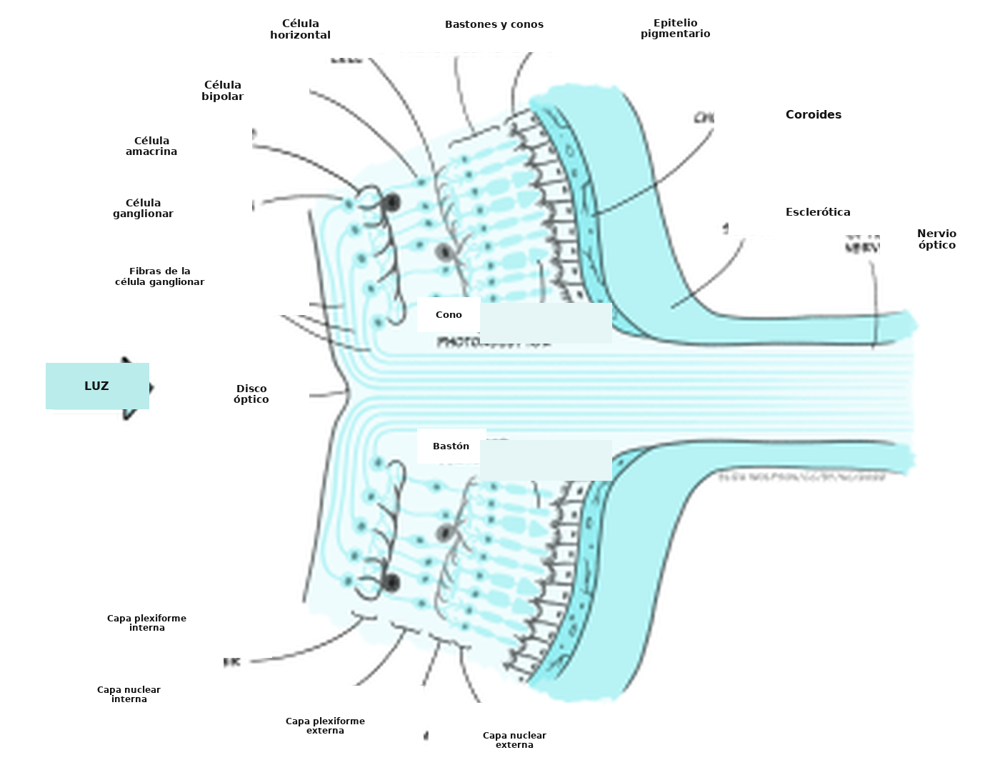
Si examinás la Figura 4.37, vas a ver que los fotorreceptores forman la capa más profunda de la retina, es decir, la más alejada de la fuente de luz. También vas a notar que hay dos tipos de fotorreceptores: los bastones y los conos. Esos dos tipos permiten que el sistema visual funcione en un intervalo amplio de luminancia y de longitud de onda.
Los bastones superan a los conos en una proporción de alrededor de 20:1 y se encuentran sobre todo en la zona periférica de la retina, y no en la fóvea, el punto central. Son mucho más sensibles a la luz que los conos, así que sirven para la visión escotópica: la visión nocturna o la de ambientes poco iluminados. También aportan información visual de menor agudeza, porque se conectan en grupos, y no de a uno, con el tipo de célula siguiente de la retina. Eso significa que el encéfalo no puede saber con exactitud de cuál de un pequeño grupo de bastones partió una señal. En el ojo humano hay un solo tipo de bastón, y es más sensible a la luz de una longitud de onda de 498 nm.
Volvé a la Figura 4.31. ¿A qué color corresponde esta longitud de onda?
Corresponde a un color verde azulado.
A diferencia de los bastones, los conos son mucho más numerosos en la fóvea y nos dan una visión de alta agudeza, porque las conexiones de uno a uno con otras células crean campos receptivos muy pequeños. Son menos sensibles que los bastones y, por lo tanto, se adaptan mejor a la visión fotópica, o visión diurna. Hay, sin embargo, tres tipos de conos, cada uno con una sensibilidad espectral distinta (Figura 4.38).
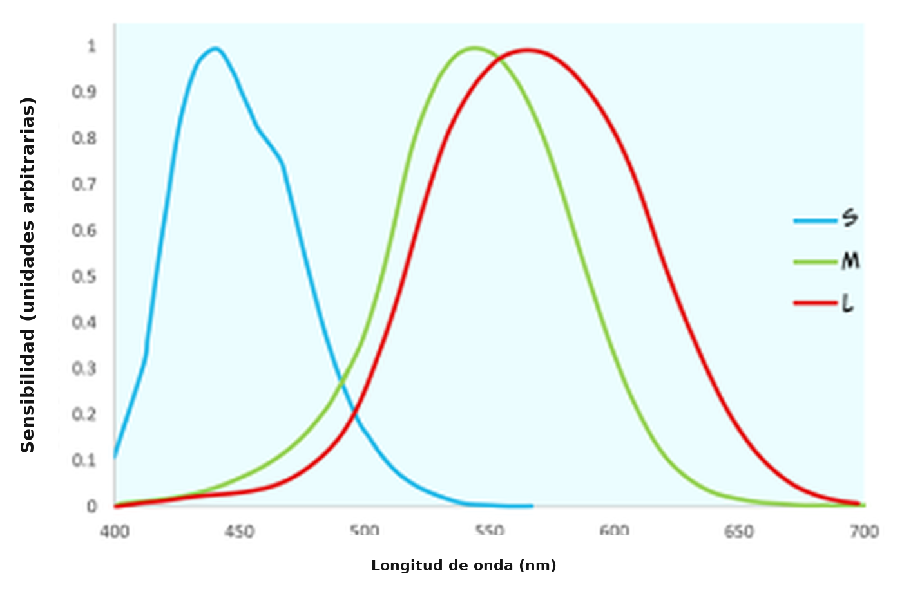
Aunque a los conos suele llamárselos conos de onda corta (S), media (M) y larga (L), según la longitud de onda a la que son sensibles, a veces se los llama conos azules, verdes y rojos, de acuerdo con los colores que percibimos en las longitudes de onda que los activan de manera óptima.
Mirá la Figura 4.38: ¿qué cono esperarías que reaccione si la retina detecta una luz de 540 nm?
Cabría esperar que reaccionen el cono rojo y el verde, porque esa longitud de onda está dentro de su sensibilidad espectral.
En la pregunta anterior te preguntamos por la reacción de los fotorreceptores. Eso nos lleva a la etapa siguiente del recorrido por el sistema visual: vamos a mirar ese proceso en detalle, y pasamos a la transducción.
Fotorreceptores y transducción visual
Para entender la transducción conviene mirar con un poco más de detalle la estructura de los fotorreceptores (Figura 4.39).
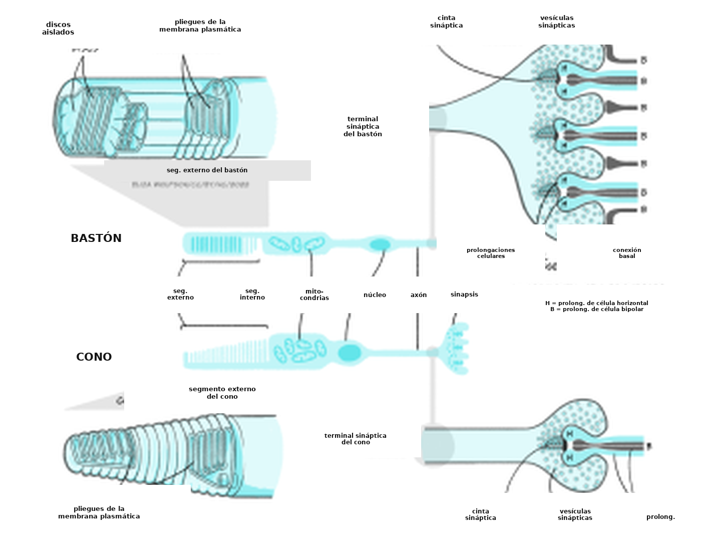
Tanto los bastones como los conos tienen un segmento externo que incluye un pigmento fotosensible que la luz puede descomponer. El pigmento de los bastones, llamado rodopsina, contiene una proteína —la opsina— unida a una molécula llamada 11-cis-retinal. El pigmento de los conos suele llamarse yodopsina y también está formado por opsina y 11-cis-retinal, pero se trata de tres moléculas de opsina ligeramente distintas, con sensibilidades espectrales diferentes. El proceso de fototransducción es similar en todos los bastones y conos. Más abajo se lo describe en detalle para los bastones, con la rodopsina y no con las distintas opsinas de los conos, aunque en los conos el proceso es análogo.
La transducción visual, o fototransducción, es más compleja que la del tacto, el dolor o la audición, así que vamos a descomponerla en una serie de pasos. También conviene tener una visión de conjunto desde el inicio (Figura 4.40).
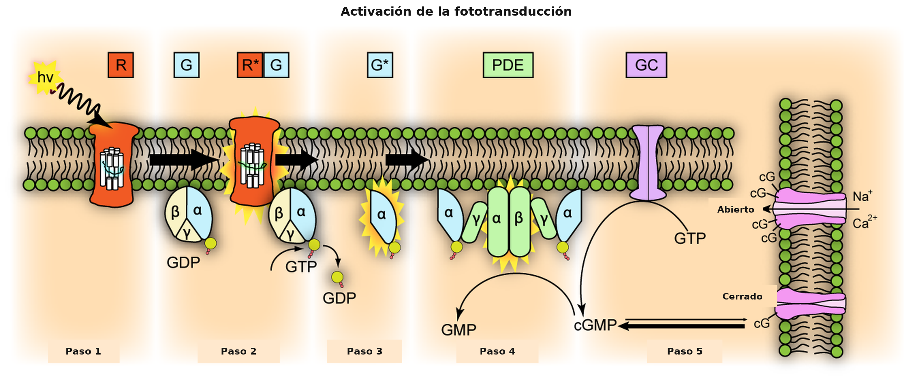
La primera etapa de la transducción ocurre cuando la rodopsina absorbe la energía de un fotón de luz que llega a la retina. Esa absorción obliga al 11-cis-retinal a transformarse y convertirse en todo-trans-retinal: así se «activa» la rodopsina.
En la segunda etapa, la rodopsina recién activada interactúa con una proteína G llamada transducina. Las proteínas G aparecieron brevemente en el capítulo Transmisión neuronal. Igual que la rodopsina, los receptores metabotrópicos de neurotransmisores son receptores acoplados a proteínas G (GPCR, por su sigla en inglés). Las proteínas G son un grupo de proteínas que participan en la transmisión de señales desde el exterior de la célula hacia el interior, y se llaman así porque se unen a nucleótidos de guanina. En la fototransducción, la activación de la proteína G transducina por la rodopsina transmite al interior del fotorreceptor la información sobre la luz que está afuera. En la neurotransmisión, la unión del ligando al receptor activa la proteína G para transmitir información sobre la presencia del neurotransmisor en la sinapsis. En ambos casos, la proteína G activada libera el difosfato de guanosina (GDP) que tenía unido y, en su lugar, se une a una molécula de trifosfato de guanosina (GTP).
En la tercera etapa de la transducción, la unión del GTP a la proteína G, la transducina, hace que las subunidades β y γ de la transducina se separen de la subunidad α y de la molécula de GTP unida. En la cuarta etapa, la subunidad α y el GTP unido interactúan con una segunda proteína, la fosfodiesterasa (PDE), que a su vez se activa.
Si tiene que producirse un potencial de receptor, ¿qué esperarías que ocurra en algún momento de la transducción?
Haría falta que se abran o se cierren canales iónicos, para que cambie el movimiento de iones a través de la membrana: esos iones transportan la carga que constituye el potencial de receptor.
El paso final es la degradación, por la PDE activada, de una molécula llamada monofosfato de guanosina cíclico (GMPc; cGMP en inglés). El GMPc lo produce la guanilil ciclasa y abre canales iónicos dependientes de GMPc en la membrana celular, que dejan entrar iones sodio y calcio a la célula. Así, cuando la PDE degrada el GMPc, esos canales iónicos se cierran y ya no puede entrar más calcio ni sodio. Quizá no sea exactamente lo que esperabas, porque en los sentidos que vimos antes la transducción implica que se abran canales y que entren iones de carga positiva, con lo que la célula se despolariza. En la detección de la luz ocurre lo inverso: detectar la luz interrumpe una corriente despolarizante e hiperpolariza la membrana. La corriente que fluye cuando no se absorbe ningún fotón de luz se llama «corriente de oscuridad». Una razón que se propuso para que el sistema visual funcione así es reducir el ruido de fondo. Cuando hay una corriente de oscuridad, entra sodio a la célula de manera constante en ausencia de luz. Eso significa que las fluctuaciones menores en la apertura de los canales de sodio no afectan mucho a la célula: el ruido, en la práctica, se ignora. Solo cuando se cierra una gran cantidad de canales, con la luz, se modifica el potencial de membrana y aparece una señal clara.
En cualquier caso, la disminución del calcio intracelular que ocurre porque los canales se cierran cuando la luz llega a la retina reduce la liberación de glutamato desde el fotorreceptor. Eso, a su vez, influye en la producción de potenciales de acción de las células bipolares que hacen sinapsis con los bastones y los conos. Hay, a grandes rasgos, dos tipos de células bipolares: las células ON y las células OFF. Las células bipolares OFF responden a la disminución de la liberación de glutamato durante la estimulación luminosa con una disminución de la descarga de potenciales de acción: es decir, una disminución del glutamato produce una disminución de la excitación y menos descarga. En cambio, las células bipolares ON responden a la disminución del glutamato durante la estimulación luminosa con un aumento de la descarga de potenciales de acción. El glutamato suele ser excitatorio: ¿cómo puede una disminución del glutamato durante la luz aumentar la descarga de la célula bipolar? Ocurre porque, en lugar de expresar receptores ionotrópicos de glutamato de tipo AMPA, las células ON expresan un receptor metabotrópico de glutamato específico, el mGluR6. Cuando el mGluR6 se activa, las subunidades de su proteína G cierran un canal catiónico inespecífico (un canal de iones positivos) e hiperpolarizan la célula. Cuando se reduce la liberación de glutamato, el mGluR6 queda inactivo, el canal catiónico puede abrirse, entran iones sodio a la célula bipolar, la despolarizan y provocan potenciales de acción. Las células bipolares, a su vez, se conectan con las células ganglionares de la retina, cuyos axones forman el nervio óptico y transmiten potenciales de acción desde el ojo hasta el encéfalo.
Vías visuales: hasta la corteza visual y más allá
Los axones de las células ganglionares de la retina forman el nervio óptico y salen del ojo por el punto ciego. Desde el nervio óptico hay dos rutas posibles: una cortical y una subcortical. La ruta cortical es la vía responsable de gran parte del procesamiento superior de la información visual, y concentró una gran cantidad de investigación; por eso es un punto de partida lógico. La Figura 4.41 muestra el recorrido que suele seguir la información visual desde el ojo hasta la corteza visual primaria, ubicada en el lóbulo occipital. En comparación con la vía que va del oído a la corteza auditiva primaria, esta vía parece bastante simple, pero la información se ordena con mucho cuidado a lo largo de todo el recorrido.
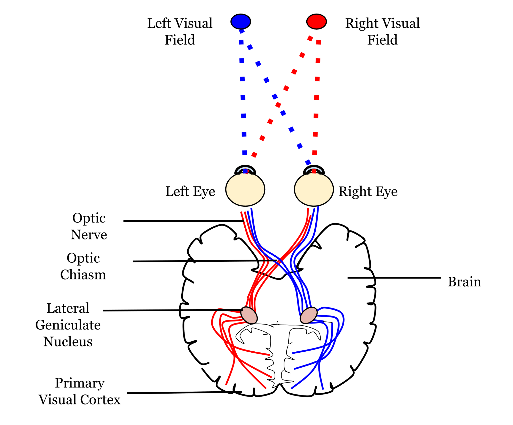
Desde el ojo, la información sale por el nervio óptico. Los nervios ópticos de ambos ojos se encuentran en el quiasma óptico, que puede verse en la cara inferior del encéfalo (Figura 4.41). En ese punto la información se ordena de modo que las señales del campo visual izquierdo de ambos ojos siguen su vía por el lado derecho del encéfalo, mientras que la información del campo visual derecho de ambos ojos continúa por el lado izquierdo. La primera parada en el encéfalo es el núcleo geniculado lateral (NGL; LGN en inglés), que forma parte del tálamo. Cada NGL se divide en seis capas. Tres de esas capas reciben información de un ojo y tres la reciben del otro. Se dice que esas capas tienen un mapa retinotópico: las neuronas vecinas reciben información de regiones vecinas del campo visual.
Desde el NGL, la información viaja, por la radiación óptica, hasta la corteza visual primaria (V1), a veces llamada corteza estriada por su aspecto rayado. Como vimos en un capítulo anterior (Exploración del cerebro: recorrido por las estructuras del sistema nervioso), la corteza consiste en una serie de capas, desde el exterior del encéfalo hacia el interior. La capa más dorsal, o externa, es la capa I, y la más profunda, o interna, es la capa VI. La información del NGL entra a la corteza visual primaria por la capa IV, y las distintas capas del NGL entran a distintas subdivisiones de la capa IV (Figura 4.42).
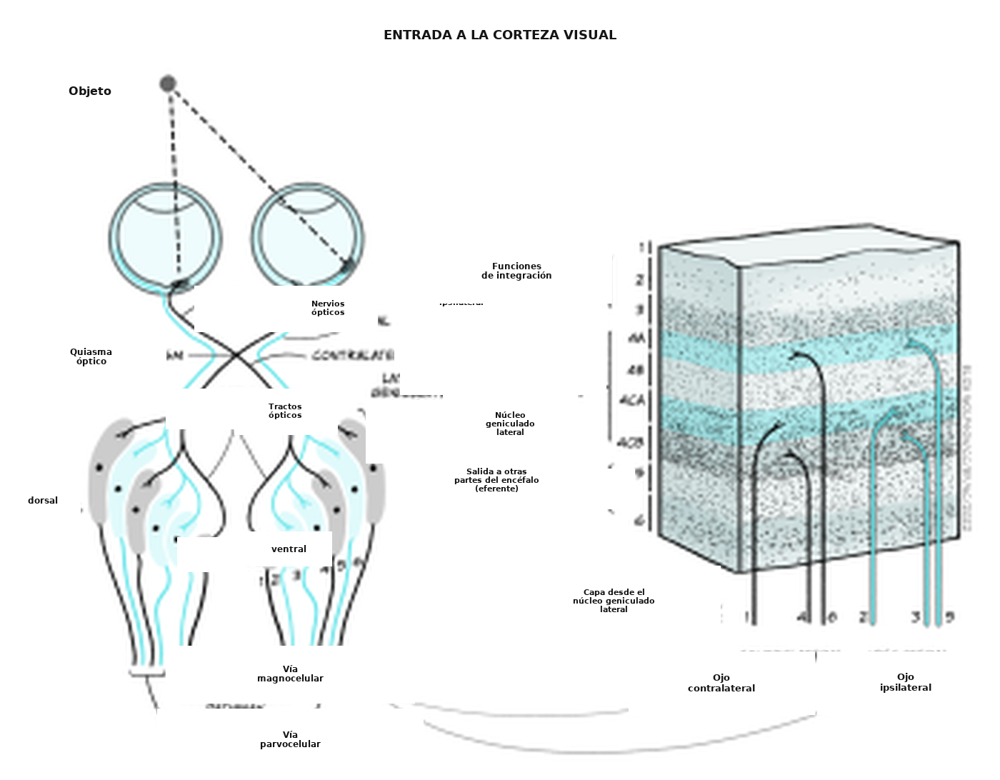
Hay muchos miles de neuronas corticales que reciben información de cada pequeña región de la retina, y esas células se organizan en columnas que responden a rasgos específicos del estímulo, como la orientación. Eso significa que las células de una columna de orientación responden de preferencia a una orientación determinada (por ejemplo, líneas a 45° en el sentido de las agujas del reloj respecto de la vertical), mientras que las de la columna siguiente responden a una orientación ligeramente distinta. Entre todas las columnas pueden representarse todas las orientaciones. La corteza visual primaria también puede dividirse en columnas que responden de preferencia a un ojo o al otro: son las «columnas de dominancia ocular». En teoría, la corteza puede dividirse en «hipercolumnas», y cada una contiene representaciones de ambas columnas de dominancia ocular y de todas las orientaciones para cada parte del campo visual, aunque no se proyectan sobre la superficie cortical con la nitidez que alguna vez se sostuvo (Bartfeld y Grinvald, 1992).
Sin embargo, pese a la organización exquisita de la corteza visual primaria, la información no se detiene ahí. De hecho, la información visual viaja a muchas regiones corticales distintas: hasta ahora se identificaron 30.
¿Podés recordar cómo se dividía la información auditiva después de la corteza auditiva primaria?
Se dividía en una vía dorsal y una vía ventral.
La información visual también puede dividirse en una vía dorsal y una vía ventral. Se piensa que la vía ventral, que incluye V1, V2, V4 y otras regiones de las áreas temporales inferiores, es responsable de la identidad de los objetos: es una vía del «qué». La vía dorsal, que incluye V1, V2, V3 y V5, sostiene la detección de la localización y los movimientos guiados por la visión (por ejemplo, alcanzar un objeto): es una vía del «dónde» (Figura 4.43).
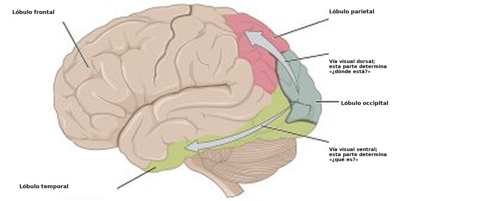
Mencionamos que también hay una vía subcortical por la que la información visual puede recorrer el encéfalo. De hecho, hay varias estructuras subcorticales que reciben información visual, pero una de las principales es una estructura llamada colículo superior. El nombre puede resultarte conocido porque ya leíste sobre el colículo inferior al explorar la audición. El colículo superior está justo por encima del colículo inferior, en la superficie del mesencéfalo. Aunque a menudo se lo pasa por alto al describir el procesamiento visual, se piensa que el colículo superior participa en la localización y en la codificación del movimiento. También se lo vinculó con un fenómeno interesante llamado visión ciega (véase el recuadro de más abajo, «Visión ciega: soy ciego y, sin embargo, veo»).
Recuadro. Visión ciega: soy ciego y, sin embargo, veo
La visión ciega se describió por primera vez en la década de 1970, cuando un grupo de investigación identificó un funcionamiento visual residual en personas consideradas clínicamente ciegas por un daño de la corteza visual (Pöppel, Held y Frost, 1973; Weiskrantz y Warrington, 1974). Esas personas decían no poder ver, pero podían detectar, localizar o discriminar estímulos de los que no tenían conciencia, por encima del nivel del azar (es decir, por encima de lo que cabría esperar si solo estuvieran adivinando). Trabajos posteriores permitieron distinguir la visión ciega de tipo 1, en la que la persona puede adivinar ciertos rasgos del estímulo por encima del azar —por ejemplo, el tipo de movimiento— sin tener ninguna conciencia de él, y la de tipo 2, en la que la persona puede detectar un cambio en el campo visual pero no llega a percibir ese cambio (Weiskrantz, 1997).
Se propusieron varias explicaciones para este fenómeno:
- Otras áreas, además de la corteza visual primaria, sostienen las respuestas, incluido el colículo superior, del que se mostró que da respuestas visuales rápidas y groseras.
- Aunque gran parte de la corteza visual primaria está destruida en las personas con visión ciega, quedan pequeños islotes de funcionamiento, y eso explica las capacidades residuales.
- El NGL es capaz de detectar información visual clave y pasarla de manera directa a otras áreas corticales, lo que podría explicar el fenómeno.
La investigación sobre la visión ciega y sobre el papel de varias estructuras encefálicas en el procesamiento visual continúa, pero la existencia de este fenómeno demostró que las vías subcorticales y las estructuras que están fuera de la corteza visual primaria pueden seguir cumpliendo un papel importante en el procesamiento visual.
Ya hablamos de la transducción y de las vías de la visión, pero no dijimos mucho sobre cómo se detectan los rasgos específicos de la escena visual. Como probablemente hayas advertido, es un proceso extremadamente complicado, así que en la sección siguiente vamos a concentrarnos solo en tres componentes de la escena visual: el color, el movimiento y la profundidad.
Percibir el mundo: color, movimiento y profundidad
El procesamiento del color es decisivo para nuestra percepción del mundo, y antes en esta sección viste que tenemos tres tipos de conos, con sensibilidades espectrales distintas pero superpuestas. Esos tres tipos de conos de la retina son el comienzo del recorrido de la percepción del color. La presencia de tres tipos de conos se denomina tricromía. Se piensa que el desarrollo de la tricromía ofrece una ventaja evolutiva, porque puede ayudar a identificar alimentos adecuados y a discriminar mejor su madurez. Por ejemplo, se piensa que la capacidad de diferenciar el rojo del verde es importante, porque los colores rojizos de las frutas indican un mayor contenido de energía o de proteínas. Los trabajos con seres humanos sugieren que el color sigue siendo importante en las preferencias alimentarias (Foroni et al., 2016).
Se piensa que la salida de los tres tipos de conos se traduce, en las células ganglionares de la retina, a un sistema de colores oponentes, que luego puede dar lugar a canales específicos de información en el sistema visual. Es la teoría del procesamiento oponente del color (Figura 4.44):
- Un canal rojo-verde, que recibe entradas opuestas de los canales rojo y verde.
- Un canal de luminancia, que recibe entradas coincidentes de los canales rojo y verde.
- Un canal azul-amarillo, que recibe una entrada excitatoria de los canales azules y una entrada inhibitoria del canal de luminancia (que, a su vez, se crea por la excitación de los conos rojos y verdes).
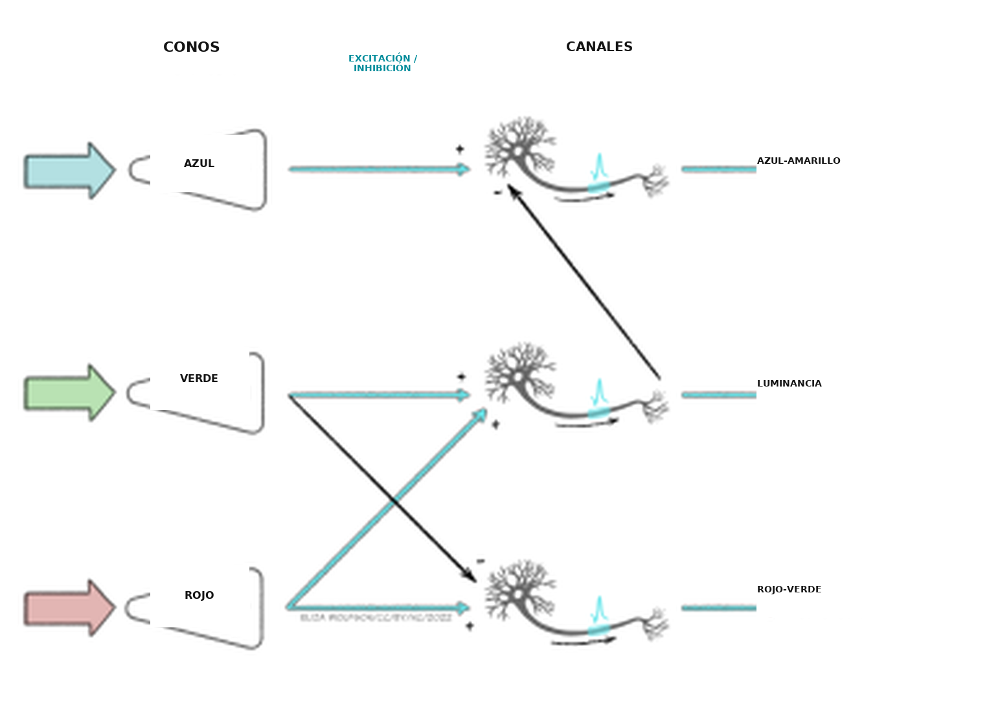
Se encontraron células que responden de acuerdo con esta teoría en el NGL y en la corteza visual primaria. Más adelante en la vía ventral, se vio que V4 contiene neuronas que responden a una gama de colores, es decir, no solo al rojo, al verde, al azul y al amarillo (Zeki, 1980). Esa área recibe entrada de V2 y envía información hacia V8. Esta última parece combinar la información del color con la información de la memoria (Zeki y Marini, 1998).
Imaginá que, una mañana luminosa, mirás por la ventana las hojas de los árboles, al sol. Ahora pensá en mirar unas horas después, cuando el tiempo se puso gris y nublado. ¿Percibís que las hojas cambiaron de color?
Ojalá hayas respondido que no, porque sabés que las hojas no cambiaron de color. Pero ¿cómo lo sabés?
Podemos percibir el color como algo que no cambia, pese a los cambios generales de luminancia, por un fenómeno llamado constancia del color. El encéfalo compensa las diferencias de luminancia al tener en cuenta el color promedio de toda la escena visual.
Antes mencionamos que algunas células de V1 responden a orientaciones específicas de los estímulos. Además de esas células, se encontró que otras células de V1 responden al movimiento específico de los estímulos, lo que indica que la detección del movimiento empieza temprano en el procesamiento cortical. Sin embargo, se piensa que las regiones decisivas para la detección del movimiento son V5, también conocida como MT (por área temporal medial, medial temporal en inglés), y la región vecina V5a, o área temporal superior medial. V5 recibe entrada de V1, pero también del colículo superior, que participa en reflejos visuales importantes para el movimiento. La información de V5 se envía luego a V5a, donde se encontraron neuronas que responden a patrones de movimiento específicos, incluido el movimiento en espiral (Vaina, 1998).
Antes de pasar al último apartado, sobre la discapacidad visual, vamos a mirar brevemente la percepción de la profundidad. La imagen que se forma en la retina es bidimensional y, sin embargo, podemos percibir un mundo tridimensional. Eso es posible porque usamos claves de profundidad específicas. Detenete un momento a mirar la escena visual de la Figura 4.45.
La imagen de la Figura 4.45 es compleja y tiene varios componentes: la casa, la cascada de la fuente, los árboles y el paisaje más allá de la casa, hasta el horizonte. Pero ¿cómo sabemos de qué modo encajan todos esos componentes? Por ejemplo, ¿cómo sabemos qué árboles están delante de la casa y cuáles detrás, o si los árboles lejanos están lejos o son, simplemente, pequeños? Podemos interpretar la escena con claves de profundidad, entre ellas:
- Interposición. Los objetos que tapan a otros están más cerca de quien mira que los que quedan tapados.
- Perspectiva lineal. Las líneas paralelas convergen a medida que se alejan. En la imagen, esto se ve en los lados de la cascada de la fuente.
- Constancia del tamaño. Los objetos que se ven más pequeños es probable que estén más lejos, así que los árboles distantes serán más pequeños que los cercanos porque están lejos, y no porque tengan un tamaño distinto.
- Altura en el campo. El horizonte suele aparecer hacia el medio de la imagen. Los objetos que están por debajo del horizonte quedan más cerca de quien observa que el horizonte, y los que están cerca del borde inferior de la imagen son los más próximos.
También obtenemos claves visuales al comparar las imágenes del ojo izquierdo y del ojo derecho: son claves binoculares. Por ejemplo, cuando el ojo izquierdo y el derecho reciben imágenes ligeramente distintas —lo que se llama disparidad binocular—, eso puede modificar nuestra percepción de la profundidad. Al reunir claves como estas, junto con información discreta sobre el color, la orientación y el movimiento, podemos crear una percepción del mundo que nos rodea.
La ceguera: causas, consecuencias y tratamiento
En el mundo, las principales causas de discapacidad visual son los errores de refracción no corregidos, como se comentó en el Recuadro 8. Sin embargo, no suelen producir ceguera. La principal causa de ceguera son las cataratas, que explican el 51 % de la ceguera en el mundo (Pascolini y Mariotti, 2012). Las cataratas aparecen cuando el cristalino desarrolla zonas opacas y pierde la transparencia, que es decisiva para transmitir la luz. Pueden presentarse en un ojo o en ambos. A medida que el cristalino se vuelve opaco, la luz no puede llegar a la retina. El Instituto Nacional para la Excelencia en la Atención de la Salud (NICE, 2022) identificó varios factores de riesgo de las cataratas, entre ellos:
- El envejecimiento. La mayoría de las cataratas ocurre en personas de más de 60 años.
- Enfermedad ocular. En este caso, las cataratas pueden aparecer a causa de otras afecciones.
- Traumatismo. Las cataratas surgen por una lesión del ojo.
- Enfermedad sistémica. Las cataratas surgen por otras afecciones, por ejemplo la diabetes.
Además del deterioro de las capacidades visuales hasta la ceguera, las cataratas se asociaron con un impacto más amplio sobre la salud. En las cataratas asociadas a la edad, su presencia se relaciona con el deterioro cognitivo y con una mayor depresión (Pellegrini et al., 2020).
En el momento de escribirse este texto, el único tratamiento de eficacia demostrada para las cataratas es la cirugía que reemplaza el cristalino por una lente sintética. Esas lentes no pueden ajustarse como el cristalino natural, así que después de la cirugía suele hacer falta usar anteojos. La operación es breve (alrededor de 30 minutos) y se hace con anestesia local, con un período de recuperación de 2 a 6 semanas. En países como el Reino Unido estas operaciones se consideran de rutina, pero en los países de ingresos bajos y medios la atención ocular suele ser inaccesible, y las cataratas pueden causar ceguera.
Después de las cataratas, la causa siguiente de ceguera es el glaucoma, que representa el 8 % de los casos, seguido por la degeneración macular asociada a la edad (DMAE), que representa el 5 % (Pascolini y Mariotti, 2012). El glaucoma es una acumulación de presión dentro del ojo que puede dañar el nervio óptico. Esa acumulación ocurre porque el líquido del ojo no drena bien, y suele desarrollarse con el tiempo. Igual que las cataratas, la afección es más frecuente en las personas mayores. Hay varias opciones de tratamiento, entre ellas los colirios, el tratamiento con láser y la cirugía, y todas buscan reducir la presión intraocular, pero el daño puede ser irreversible. Como es de esperar, esta afección también se asocia con una peor calidad de vida (Quaranta et al., 2016).
Tanto en las cataratas como en el glaucoma, el sitio del daño no es específicamente la retina ni los fotorreceptores. La DMAE, en cambio, sí resulta de un daño de la retina. En este caso, la región macular de la retina se deteriora y provoca una visión central borrosa, aunque la visión periférica permanece intacta, de modo que solo causa ceguera completa en un porcentaje pequeño de las personas. Como indica el nombre, es una afección asociada a la edad: las personas mayores tienen más probabilidad de desarrollarla, pero otros factores de riesgo son el tabaquismo y la exposición a la luz solar. Aunque la visión que se conserva podría sugerir un impacto menor que el de otros tipos de discapacidad visual, igual se asocia con una menor calidad de vida, ansiedad y depresión (Fernández-Vigo et al., 2021).
Hay dos tipos de degeneración macular asociada a la edad: la seca y la húmeda. La DMAE seca ocurre porque no se eliminan de la retina los productos de desecho celulares. Esos productos se acumulan, deterioran los vasos sanguíneos y provocan la muerte de bastones y conos. Este tipo representa alrededor del 90 % de los casos de DMAE y no tiene tratamiento. La DMAE húmeda aparece en alrededor del 10 % de las personas con DMAE, como progresión de la forma seca. Aquí se forman vasos sanguíneos nuevos en el ojo, pero son débiles y propensos a filtrar líquido. Este tipo puede tratarse con inyecciones regulares en el ojo, para reducir el crecimiento de vasos nuevos. Una alternativa a las inyecciones, o un complemento de ellas, es la terapia fotodinámica (TFD), en la que un láser se dirige al fondo del ojo para destruir los vasos anormales.
Ideas principales: resumir la visión
- El sentido de la visión usa la luz como estímulo sensorial. La luz visible forma parte del espectro electromagnético y puede concebirse a la vez como una onda y como una partícula.
- La luz emitida por los objetos, o reflejada en ellos, entra al ojo por el aparato dióptrico, donde se desvía hasta un punto focal en la retina, en el fondo del ojo. La mayor parte del poder de refracción proviene de la córnea, pero el cristalino aporta una cantidad ajustable.
- Los errores de refracción, como la miopía, pueden aparecer cuando el aparato dióptrico es demasiado débil o demasiado potente, y el punto focal queda por delante o por detrás de la retina. Aunque los errores de refracción son una causa principal de discapacidad visual en el mundo, no suelen producir ceguera.
- La transducción visual ocurre en los fotorreceptores del fondo de la retina, de los que hay dos clases: bastones y conos. En conjunto, los bastones superan a los conos y son más sensibles: dan visión en condiciones escotópicas, pero con menor agudeza, y se encuentran sobre todo en las zonas periféricas de la retina. Los conos, en cambio, están en gran medida en la fóvea y están especializados en la visión fotópica de alta agudeza. Hay tres tipos de conos, cada uno con una sensibilidad espectral distinta, y de ahí surge nuestra percepción del color.
- El proceso de transducción visual empieza con la activación del pigmento fotosensible de los fotorreceptores. Después, una serie de pasos en los que intervienen proteínas G cierra canales iónicos y, por lo tanto, reduce la entrada de calcio a la célula. Eso reduce la liberación de glutamato. A diferencia de los otros sentidos, la presencia de un estímulo hiperpolariza el receptor.
- Las células ganglionares de la retina llevan la información fuera de la retina, por el nervio óptico, hasta el núcleo geniculado lateral y, desde allí, hasta la corteza visual primaria. La información se ordena según el ojo y el campo visual, y tiene un mapa retinotópico. Después de salir de la corteza visual primaria, más de 30 regiones corticales reciben entrada visual, incluidas las que forman la vía dorsal y la vía ventral. También existen vías subcorticales, y la más notable es la que va de la retina al colículo superior.
- Los rasgos específicos de la escena visual los identifican procesos neurales específicos. Por ejemplo, se cree que el color surge por el procesamiento oponente, que crea canales rojo-verde, azul-amarillo y de luminancia en la vía ventral. En la vía dorsal se encontraron células sensibles al movimiento.
- Pueden combinarse distintos componentes de una escena visual, y el uso de claves específicas —por ejemplo, la perspectiva lineal— permite crear una percepción tridimensional a partir de la imagen bidimensional de la retina.
- Las principales causas de ceguera se asocian con la edad e incluyen las cataratas, el glaucoma y la degeneración macular asociada a la edad. En todos los casos, la afección puede tener un impacto considerable sobre la calidad de vida y producir malestar. Existen tratamientos para la mayoría de estas afecciones, pero el acceso a esos tratamientos varía mucho en el mundo.
Referencias
Bartfeld, E., & Grinvald, A. (1992). Relationships between orientation-preference pinwheels, cytochrome oxidase blobs, and ocular-dominance columns in primate striate cortex. Proceedings of the National Academy of Sciences USA, 89, 11905-11909. Neurobiology. https://www.ncbi.nlm.nih.gov/pmc/articles/PMC50666/pdf/pnas01098-0266.pdf
Fernández-Vigo, J. I., Burgos-Blasco, B., Calvo-González, C., Escobar-Moreno, M. J., Shi, H., Jiménez-Santos, M., Valverde-Megías, A., Reche-Frutos, J., López-Guajardo, L., & Donate-López, J. (2021). Assessment of vision-related quality of life and depression and anxiety rates in patients with neovascular age-related macular degeneration. Archivos de la Sociedad Española de Oftalmología (English Edition), 96(9), 470-475. https://dx.doi.org/10.1016/j.oftale.2020.11.008
Foroni, F., Pergola, G., & Rumiati, R. I. (2016). Food color is in the eye of the beholder: the role of human trichromatic vision in food evaluation. Scientific Reports, 6(1), 37034. https://doi.org/10.1038/srep37034
NICE. (2022). Cataracts. Retrieved from https://cks.nice.org.uk/topics/cataracts/background-information/causes-risk-factors/
Pascolini, D., & Mariotti, S. P. (2012). Global estimates of visual impairment: 2010. British Journal of Ophthalmology, 96(5), 614-618. https://doi.org/10.1136/bjophthalmol-2011-300539
Pellegrini, M., Bernabei, F., Schiavi, C., & Giannaccare, G. (2020). Impact of cataract surgery on depression and cognitive function: Systematic review and meta-analysis. Clinical & Experimental Ophthalmology, 48(5), 593-601. https://doi.org/10.1111/ceo.13754
Pöppel, E., Held, R., & Frost, D. (1973). Residual visual function after brain wounds involving the central visual pathways in man. Nature, 243(5405), 295-296.
Quaranta, L., Riva, I., Gerardi, C., Oddone, F., Floriani, I., & Konstas, A. G. (2016). Quality of life in glaucoma: A review of the literature. Advances in Therapy, 33(6), 959-981. https://doi.org/10.1007/s12325-016-0333-6
Vaina, L. M. (1998). Complex motion perception and its deficits. Current Opinion in Neurobiology, 8(4), 494-502. https://doi.org/10.1016/S0959-4388(98)80037-8
Weiskrantz, L. (1999). Consciousness lost and found: A neuropsychological exploration. OUP. https://doi.org/10.1093/acprof:oso/9780198524588.001.0001
Weiskrantz, L., & Warrington, E. (1974). K., Sanders, M. D., & Marshall, J. Visual capacity in the hemianopic field following a restricted occipital ablation. Brain, 97(1), 709-728. https://doi.org/10.1093/brain/97.1.709
World Health Organisation. (2018). Blindness and visual impairment. Retrieved from https://www.who.int/news-room/fact-sheets/detail/blindness-and-visual-impairment
World Health Organisation. (2021). Global eye care targets endorsed by member states at the 74th World Health Assembly. Retrieved from https://www.who.int/news/item/27-05-2021-global-eye-care-targets-endorsed-by-member-states-at-the-74th-world-health-assembly
Zeki, S. (1980). The representation of colours in the cerebral cortex. Nature, 284, 412-418. https://doi.org/10.1038/284412a0
Zeki, S., & Marini, L. (1998). Three cortical stages of colour processing in the human brain. Brain, 121(9), 1669-1685. https://doi.org/10.1093/brain/121.9.1669